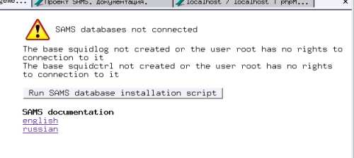
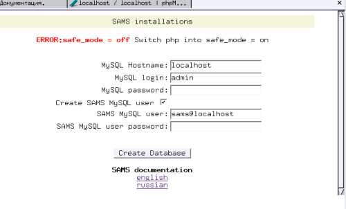
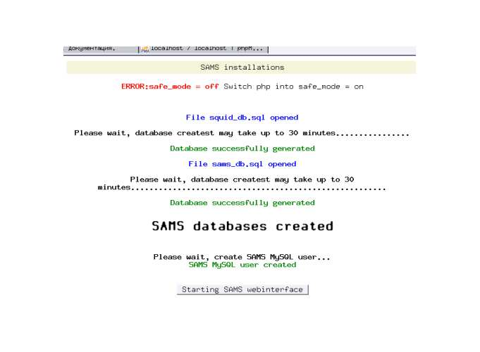

Скачайте и разархивируйте исходные коды MySQL:
tar xvfz mysql-x.x.tar.gz
далее компилируем и инсталлируем MySQL:
make
make install

В следующем диалоге будут выданы ошибки, если установлены не все необходимые для веб-интерфейса функции php и диалог, в котором будет предложено ввести параметры, необходимые для создания базы данных SAMS.

где:
MySQL Hostname - Адрес хоста, где стоит MySQL
MySQL login - имя пользователя MySQL, имеющего право создавать базы данных (root)
MySQL login - пароль пользователя MySQL, имеющего право создавать базы данных
Create SAMS MySQL user - если checkbox установлен, будут активированы поля для создания:
SAMS MySQL user - имя пользователя sams в MySQL
SAMS MySQL user password - пароль
Далее нажимаем на кнопку "Create Database". Если база данных будет выдано сообщение об этом и предложение запустить WEB интерфейс SAMS

Создание пользователя MySQL.
Для работы SAMS необходимо в MySQL создать пользователя со всеми правами на базы squidctrl и squidlog.
MySQL позволяет создать пользователя и назначить ему базу до того, как сама база будет создана.
Создание пользователя вручную
Зайдите в консоль MySQL:
mysql -u root -p (Если у вас пароль пользователя root пустой, ключ -p не используйте)
Выполните там команды:
GRANT ALL ON squidctrl.* TO sams@localhost IDENTIFIED BY "yourpassword";
GRANT ALL ON squidlog.* TO sams@localhost IDENTIFIED BY "yourpassword";
Где:
yourpassword - пароль
Занесите имя пользователя и пароль в файл конфигурации SAMS /etc/sams.conf
Создание пользователя скриптом
Отредактируйте файл /sams-XXXXXX/mysql/create_sams_user.sql и измените пароль пользователя в строках:
GRANT ALL ON squidctrl.* TO sams@localhost IDENTIFIED BY "yourpassword";
GRANT ALL ON squidlog.* TO sams@localhost IDENTIFIED BY "yourpassword";
Где:
yourpassword - пароль
Запустите скрипт /sams-XXXXXX/mysql/create_sams_user для создания пользователя.
Этот скрипт выполняется от имени пользователя root. Если у вас пользователь root имеет пароль по-умолчанию (пустой),
отредактируйте скрипт, удалив из строки
mysql -u root -p < create_sams_user.sql ключ -p
Занесите имя пользователя и пароль в файл конфигурации SAMS /etc/sams.conf
Создание базы данных SAMS:
Из каталога mysql выполните скрипты create_sams_db и create_squid_db.
Эти скрипты по-умолчанию выполняются от имени пользователя, прописанного в sams.conf.
Если у вас в sams.conf прописан пользователь root, а пароль пользователя mysql root оставлен
по-умолчанию (пустой), отредактируйте скрипты, удалив из строк
mysql -u $USER -p < xxxx_db.sql ключ -p